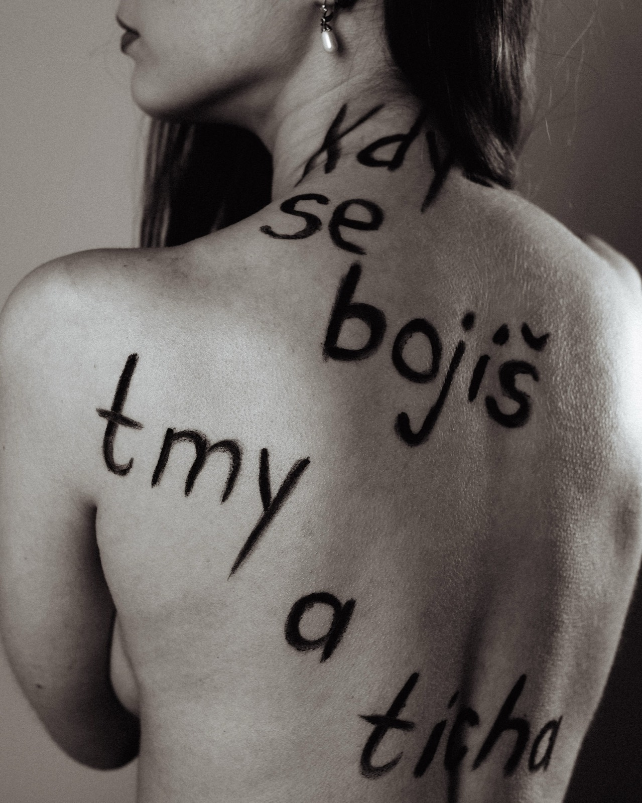
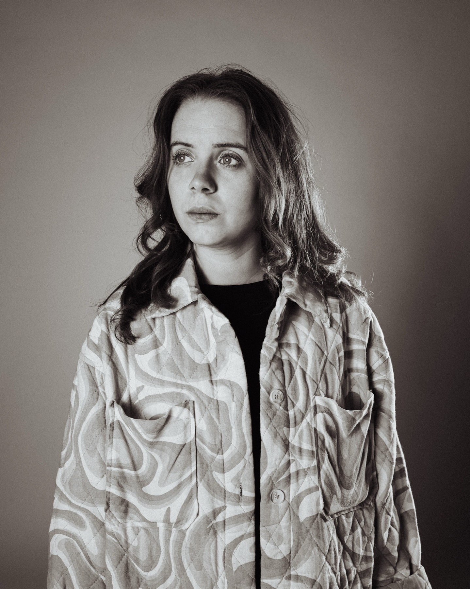
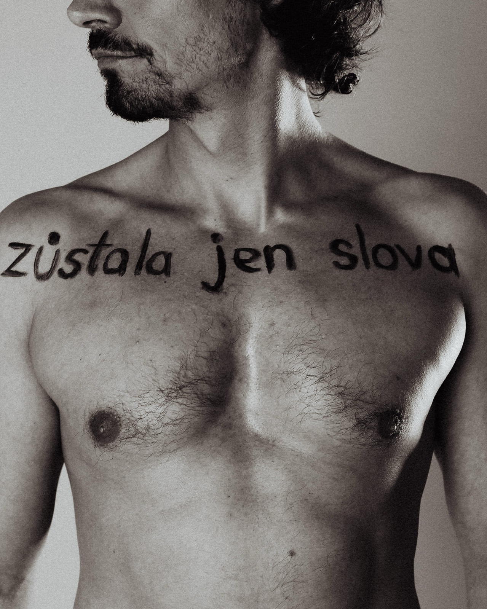

hra o slovech,
která jsme připravili o význam
Slovo prostě je. Ale nebylo tu vždy. Co tedy bylo, když slovo nebylo? Byly smysly. Kde jsou teď?
Zůstaly jen slova.

Slovo sex. Název pro něco, co pojmenovat nejde.
Slova. Názvy. Prázdno.

Všichni dospělí si myslí, že vědí, co je láska. Nevíte.

Masky. Nekonečné masky a lži sobě samým.
Je samota totéž co osamělost?
S.L.O.V.O. je hra o slovech, která jsme připravili o význam — pět hlasů krouží kolem slov, jež říkáme, aniž bychom je vážili: sex, láska, samota. Opakovaná tak dlouho, až se vyprázdní a zůstane jen zvuk.
Napsala a režíruje
Alisa Gertsovská
Hrají